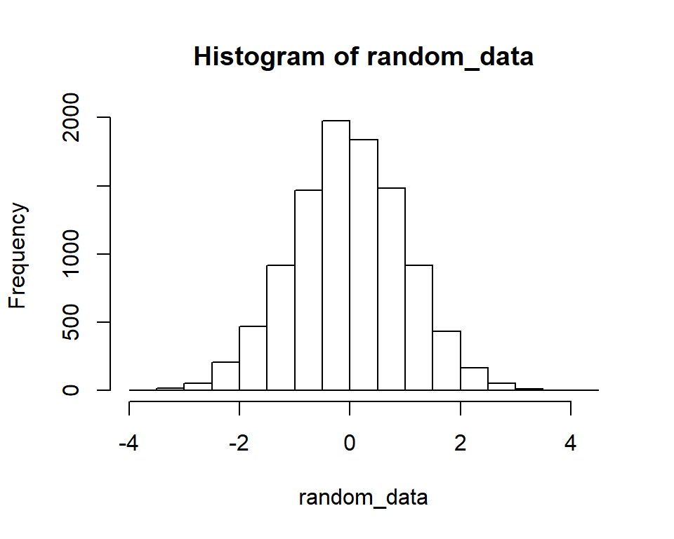

Notes REX001
This seminar takes a first look at R and R-Studio. We’ll start with the Console, where you may interact directly with R. We will then move to the text editor and start working on a simulation of a randomized experiment that we will continue to work on in the following seminars.
Getting started with R and R-studio
Make sure you have R (the statistical software) and R-studio (an interface to R) installed on you laptop before this seminar. You may run R without R-studio (but not vice versa), but I strongly recommend that you use R-Studio; it makes working with R much easier.
The Console
You may interact directly with R through the Console (typically the bottom left panel in R-studio). Here are some examples, just type the commands and hit Enter.
Use as calculator
\(27 - 13\)
27 - 13## [1] 14\((5+3)8^{1/3}\)
(5 + 3) * 8^(1/3)## [1] 16\(7!\)
factorial(7)## [1] 5040\({7 \choose 2}\)
choose(7, 2)## [1] 21
Get help (this opens a page in the Help panel of R-studio)
help(choose)
Define data structures
Store a set of numbers in a vector called x
x <- c(1, 7, 7, 3, 23, -4, 2^3)Note that x is not displayed in the Console unless called specifically
x # This is shorthand for print(x)## [1] 1 7 7 3 23 -4 8Randomly select (with replacement) 10 integers between 1 and 20, and store them in a vector called y
y <- sample(seq(1, 20), size = 10, replace = TRUE)
y## [1] 7 9 6 3 6 6 7 1 16 9Repeat ‘red’, ‘green’ four times and store them in a vector called condition
condition <- rep(c('red', 'green'), 4)
condition## [1] "red" "green" "red" "green" "red" "green" "red" "green"
Check objects
The Console is useful for checking properties of R objects, for example, the number of elements in a vector, or its first (or last) values.
a <- rep(month.abb, 5) # help(month.abb) answers your question
length(a) # Number of elements in vector a## [1] 60head(a, 7) # The first 7 values of vector a## [1] "Jan" "Feb" "Mar" "Apr" "May" "Jun" "Jul"tail(a, 5) # The last 5 values of vector a## [1] "Aug" "Sep" "Oct" "Nov" "Dec"A common mistake is to try to do things on the wrong type of data, such as trying to do math on a character (or string) vector. Experienced R-users often use str() to remind them about what type of data they are working with (some of this information is also displayed in the Environment panel of R-studio).
a + 4## Error in a + 4: non-numeric argument to binary operatorstr(a)## chr [1:60] "Jan" "Feb" "Mar" "Apr" "May" "Jun" "Jul" "Aug" "Sep" ...
Asking the Console to produce plots works fine:
random_data <- rnorm(10^4)
hist(random_data)
Exercises
- Calculate \(\left|\sqrt{10}/(\pi-4)\right|\). Remember that Google is your best friend. Use it to find out how R implements the square-root function, the absolute function, and the constant \(\pi\). The expression equals:
## [1] 3.683889- Use R’s help function to find out what the
combn()function does. If the help page doesn’t make sense, use Google to find out (R’s help-pages take some time to get used to).
z <- combn(7, 2)- What’s the difference between the
sort()and theorder()function? Try this to find out.
my_data <- sample(10)
a <- sort(my_data)
b <- order(my_data)
Script files
You will do most of your typing in the script window (typically located above the Console in R-Studio). Here you write blocks of code in a script file (select File/New File/R Script or press Ctrl+Shft+N in R-Studio to open a new script). The code in the script is not executed unless you ask for it, for example by pressing Ctrl-R. If you just want to run a part of the script, selected this part and then hit Ctrl-R. If you just want to run a single line, just put the cursor on the line and hit Ctrl-R.
Script1: Randomized experiment
Click here for a script file (Script1), to be completed it in the following seminars (at REX002-004, we will do another simulation exercise at REX005-006).
The simulated scenario is a simple randomized experiment conducted at a large school. At the beginning of the semester, all sixth-graders are randomly assigned to receive extra music lessons (tratement) or no extra lessons (control). The outcome is performance on a math test taken at the end of the semester.
(loosely inspired by Schellenberg, E.G. (2004). Music lessons enhance IQ. Psychological Science, 15, 511-514.)
Key variables:
1a. Independent variable (R): At the start of grade 6, all children at the school are randomly assigned to receive either extra music lessons (treatment) or no extra music lessons (control).
1b. Independent variable (Music): Music lessons or not. In case of non-compliance, received treatment will differ from assigned treatment (R).
2. Background (or pre-treatment) variable (SES): Socioeconomic status, defined based on residential area. The pupils in this school are from one of two nearby residential areas: one high-income and one low-income area. 3. Outcome variable (Mathscore): Score on a math test taken at the end of the semester.
This is a Directed Acyclical Graph (DAG) of the simulated scenario.
## Warning: package 'dagitty' was built under R version 3.4.4
Today, we will just simulate some data:
- Decide sample size and define a variable with id-numbers for each simulated participant
- Randomly assign children to treatment, using the
sample()function. - Sanity check using the
table()function. - Simulate outcome, to begin with as independent of treatment using the
rnorm()function. - Do some preliminary analyses to get a first feeling of how R is used for analyzing data.
(If you want to jump ahead, here is the final script from last year, finalized at REX004 Click here for the final script).
Exercises
In the following seminar (REX002), we will simulate socioeconomic status as related to non-compliance. Please try it beforehand.
© Mats E. Nilsson
Gösta Ekman Laboratory,
Department of Psychology, Stockholm University